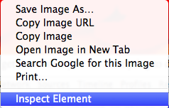

To program is to have power. Let me give you that power.
Let us get started right now. Push the keys ctrl-option-i. At the lower edge of your window you will see this:

The name of this window is Developer Tools
This window gives you many powers. Here is the power I like best: the power to make things so I am not able to see them. I do not like the picture below. Let us make it go away.
Right-click on the picture of the red lobsters. You will see a menu. Click on Inspect Element.
You will see the developer tools come up.
The bit in blue is the code that puts the image in the page. If you put your mouse over the blue bit, you are able to see the picture turn a color.
This is how you are able to see what bit of code goes with what bit of the page
Now we are going to make this picture disappear.
A developer is a person who makes webpages like this one. A tool is a thing you use to help you get done what you are attempting to do. Developer tools are things that make it more simple to make web pages like this one.